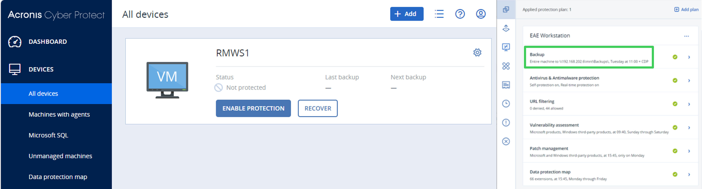

To enhance your resource availability, read the following sections:
Backups should be regularly verified by restoring the engineering workstations and validating that the latest version of the solution is available on the engineering workstation.
In the solution date and version
Running in the device date and version
In the boot application date and version
To enhance the success of your backup and restore process, you must define a backup plan. You must analyze each component of your system to understand their backup and restore capabilities and their compatibility with the chosen backup and restore offer.
| NOTE | |
|---|---|
Backup and restore of EcoStruxure Automation Expert offer is recommended to be handled by a CAP component: Acronis® Cyber Protect.
When defining your backup plan, take into account that Acronis® Cyber Protect manages a continuous and automatic backup process only on devices hosting Windows or Ubuntu operating systems.
So during your analysis of the EcoStruxure Automation Expert offer, it depends what are your components:
Engineering workstations, Soft dPAC or High Availability Soft dPAC device: You can create an automatic backup plan with Acronis® Cyber Protect as these devices are respectively on Windows, for the engineering workstations, and Ubuntu, for the Soft dPAC and the High Availability Soft dPAC.
ATVd, CRD or M262d devices: You cannot benefit from automatic backup plan with Acronis® Cyber Protect as these devices are not on Windows or Ubuntu. However, their data can be re-deployed from the EcoStruxure Automation Expert engineering workstation hosting the solution (which uses one of the two available operating systems).
For example, you can see in the following image an EcoStruxure Automation Expert engineering workstation hosting a Windows operating system with an applied backup plan. This backup plan takes place every Tuesday at 11am. The backup files are stored in a Network Access Storage (NAS).

The procedures detailed here only explain the backup and restore plan of EcoStruxure Automation Expert. It is strongly recommended to also devise a backup plan for:
Any IT infrastructure such as the Active Directory system Domain Controllers.
AVEVA OMI Operator Workstation, AVEVA System Platform Server.
If SVN is used for configuration management of the EcoStruxure Automation Expert solution the SVN database should be backed up.
The Graylog server according to the procedure, as detailed here.
If the Deploy and Diagnostic editor shows mismatching dates and versions in the In the Solution, Running in the device and In the boot application, devices should be redeployed:
Device recovery on failure; devices can be restored on failure by:
Reapplying the Security configuration, device configuration, and deploying the current application.
Deploying the current application.
Restoring the persistence data if required.
Persistence backup; any state data that the user wants to preserve must be stored by the application using the PERSISTENCE function block. This data is automatically applied to the application when the device restarts. This data can be periodically backup up on request and stored in the solution, which is backed up within the engineering workstation.
Application changes; the application can be restored to previous versions by applying version management with SVN.
| NOTE | |
|---|---|
The workstations, controllers, network devices and IO modules described in the EcoStruxure Automation Expert architecture, mentioned in the topic Control System Architecture, do not themselves provide emergency power. The M262d and M580d do provide some functionalities to store a log message to indicate the time when the power failed, but cannot continue to operate when there is a power supply failure.
Therefore the power supply to the Controllers, Workstations and Servers must be via an Uninterruptible Power Supply (UPS).
During power loss, the site’s generator should switch on within five to ten minutes. This time might vary depending on the type of fuel used by the generator.
| NOTE | |
|---|---|
The site’s disaster recovery planning should include an emergency backup power plan in case of power loss. This includes having sufficient battery backups and uninterruptible power supply (UPS). By allowing systems to safely shutdown, UPSs can help protect equipment from:
Power surges
Power loss
Natural disasters
Cyber attacks
Schneider Electric’s APC™ brand is a leader in UPS systems. Schneider Electric recommends cyber attack and disaster recovery planning.